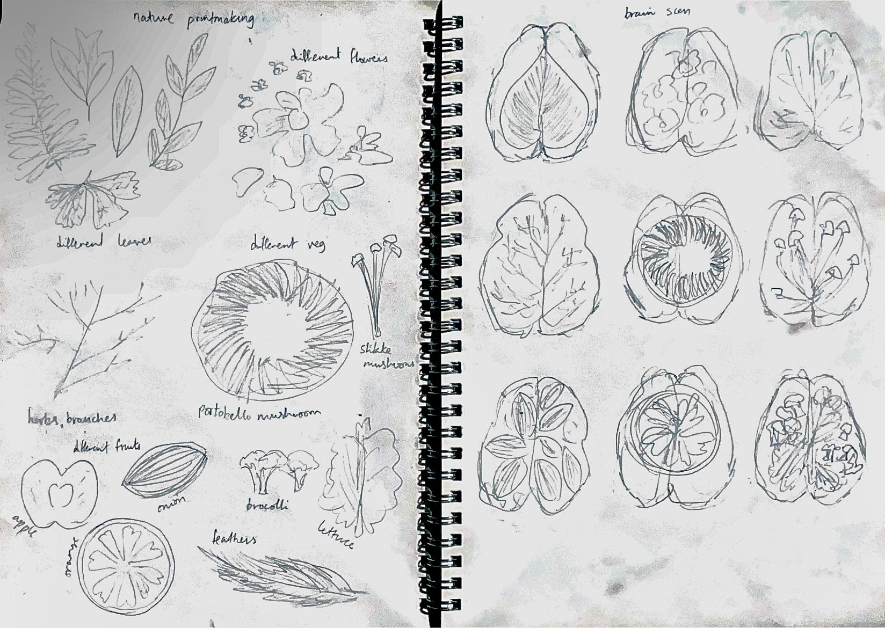
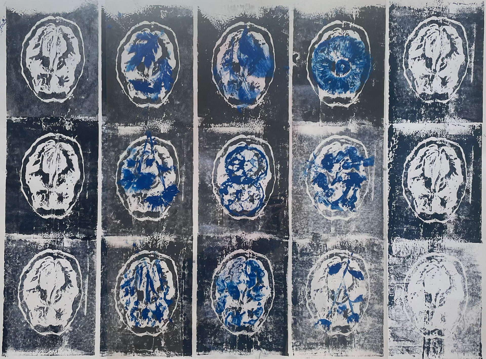

Archive
Involuntary Metamorphosis

A visual translation of my poem, ‘Involuntary Metamorphosis’, narrating the story of humanity turning back into nature. My series of cyanotype prints emulate brain scans, with natural elements replacing the insides; depicting nature taking over human qualities. The elements are ink prints of leaves, fruits, feathers, etc. Text from my poem and words in code add X-ray precision, echoing the narrative of transformation, furthered through the optical progression of the zine.
Idea development

